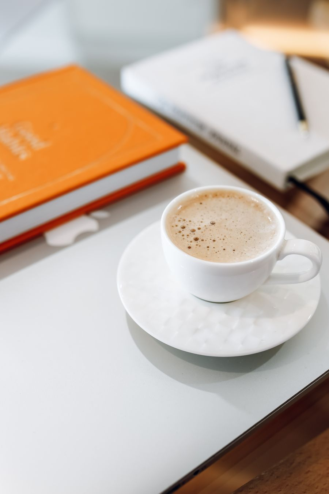
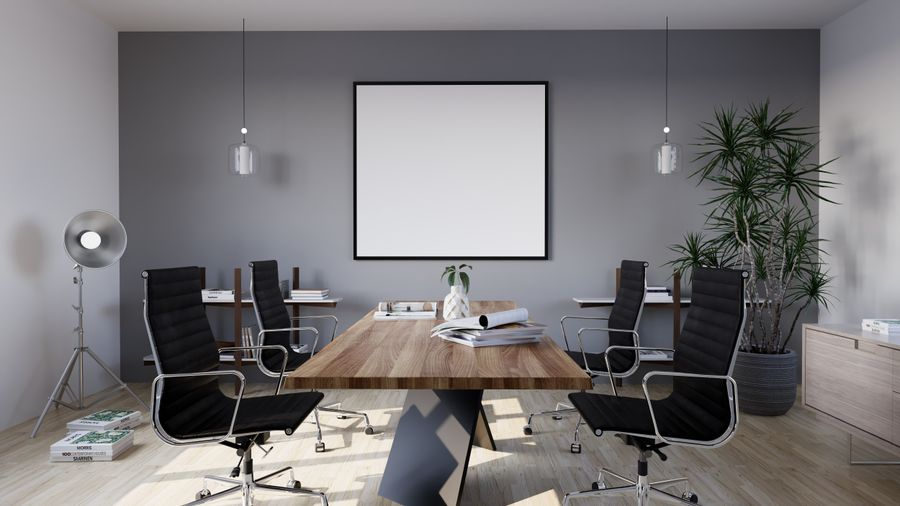
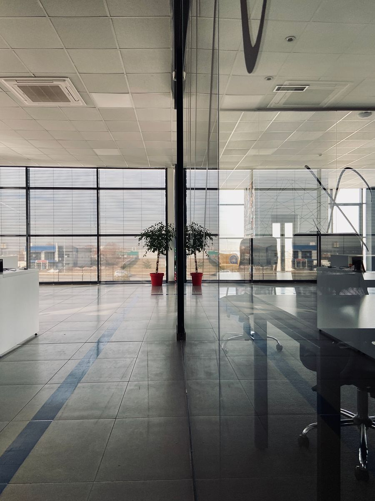
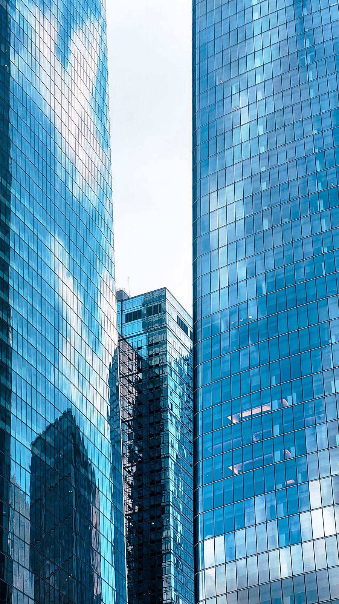

Brand Guidelines
The visual and verbal identity system for Locate Digital — refined for a more premium, sleek, corporate presentation while keeping every colour, mark and word that clients already recognise.
Brand foundation
Before any colour or font, the guidelines start with what Locate Digital is actually for. Every visual decision in this document is in service of this positioning.
| One‑sentence USP | We help Melbourne service businesses book more new customers with Google and Meta ads, without wasting spend or being locked into long contracts. |
| Who we're for | Established, time‑poor service business owners (physio, osteo, allied health, dental, legal, trades) who want more bookings, not a marketing education. |
| What we lead with | Outcomes — new patients, bookings, cost per enquiry. Never deliverables — posts, impressions, reach. |
| What makes us credible | Specialist in service businesses, plain‑English reporting, no lock‑in contracts, real numbers over vague claims. |
This is the standard every asset gets held to: does it look like it belongs to a specialist a business owner would trust with real budget? That standard is what "premium" means in this document — not a new colour, a calmer, more confident execution of the one we already have.
Logo
The mark is a location pin built from two overlapping triangles — the "locate" in Locate Digital. It never changes colour, angle or proportion. Three lockups cover every background.

Reverse lockup — blue or photo backgrounds Symbol mark — avatars, favicons, app icons
Symbol mark — avatars, favicons, app icons
 Stacked lockup — square or narrow formats
Stacked lockup — square or narrow formats
Clear space & minimum size
Keep clear space equal to the height of the pin symbol on all sides — nothing else (text, edges, other logos) sits inside that margin. Never scale the horizontal lockup below 28px tall on screen or 18mm in print; below that, use the symbol mark alone.
Incorrect usage
The pin's proportions are fixed. Scale uniformly only.
Blue, white or grayscale only — never brand orange, black fills, or gradients on the mark.
On photography, use the reverse lockup over a solid or scrim, never raw over detail.
No drop shadows, outlines, bevels or glows on the logo itself.
The pin's angle is fixed — rotating it reads as a different mark.
Keep decorative elements (underlines, swooshes) well away from the lockup.
Colour system
Same palette, stricter roles. The premium shift is entirely in ratio: more neutral space, blue doing the heavy lifting, orange spent like a rare currency instead of a decoration.
Usage ratio
Roughly how colour should divide across any page, slide or ad — the discipline that reads as "corporate" rather than "startup."
| Old habit | Refined rule |
|---|---|
| Orange squiggle under headline | Drop it. Use a thin, single-colour underline in cyan at low opacity, or no underline at all — let type weight carry emphasis. |
| 3 overlapping blobs per hero | One, maybe two. Larger, softer, lower opacity (≤18%), placed off to one side, never behind text. |
| Orange on every button | Orange marks the single primary action per view. Every other button is ink outline (ghost) or solid ink. |
| Gradient text for every big number | Reserve the blue→cyan gradient number for one hero statistic per document, not every KPI. |
| White cards on white page | Alternate white and soft‑bg (#FBFCFF) sections so structure reads without needing colour to separate them. |
Typography
Two typefaces: Newsreader, a serif, for headings and labels, and Public Sans for everything people read closely. The serif sets Locate apart from the sans-serif look of most agency and AI-built sites, and reads as established rather than startup.
Type scale
| Old habit | Refined rule |
|---|---|
| Title Case Everywhere | Sentence case for all headlines and buttons — reads calmer, more considered. |
| Exclamation marks in headlines | None. Confidence is stated plainly, not shouted. |
| SMALL TRACKED CAPITALS FOR LABELS | Sentence case in Newsreader, no letter spacing. Tracked capitals are the most recognisable template and AI-built pattern. |
| Zero-padded numbers (01, 02, 03) | Single digits (1, 2, 3) for steps and lists. |
| Every heading extra bold | Reserve 800 weight for H1/H2 only; H3 and below use 700 for a clearer hierarchy. |
Voice & tone
Direct, plain‑English, outcome‑led. Australian spelling throughout. The tone doesn't change for "premium" — corporate confidence here means fewer words, more specificity, never hype.
Outcomes, not deliverables
Talk about new patients booked and cost per enquiry — never posts published or impressions served.
Plain English
No jargon a business owner wouldn't use themselves. If a term needs explaining, cut it or explain it in one clause.
Specific over vague
"37 enquiries at $24 each" beats "great results." Real numbers, or no number at all.
Confident, not hypey
State the value once, clearly. No stacked adjectives, no exclamation marks, no "game‑changing."
"37 new enquiries last month, at $24 each."
"We smashed it out of the park with amazing engagement!"
"No lock‑in after the first 90 days."
"Unlock unlimited growth potential today!"
Photography & imagery
Sam is the face of the brand, shot real rather than staged. The direction leans toward finance and professional‑services imagery — glass, structure, quiet confidence — over startup‑casual, with genuine variety rather than one repeated setting. References below are free stock photography (Pexels) standing in for the look to shoot, shown in natural colour.
Real documents and data on the table, genuine discussion, natural light.
Pexels · business people working together
Productivity deskCoffee, notebook and a closed laptop on a clean desk — the quiet‑focus, get‑it‑done shot.
Pexels · coffee and notebook on a desk
BoardroomMinimalist conference room, considered furniture, quiet and empty or in genuine use.
Pexels · minimalist conference roomA younger, mixed team heads‑down on laptops — informal energy, still sharp.
Pexels · young professionals working on laptops
Office interiorMinimal interior detail — clean lines, empty and calm, quiet backdrop for quotes/stats.
Pexels · modern office, glass walls
Building facadeGlass tower exterior, geometric and abstract — a premium establishing or divider shot.
Pexels · blue glass skyscrapersReference images only, used under Pexels' free licence — swap for licensed or original photography of Sam and real client environments before final publication.
| Use | Avoid |
|---|---|
| Natural light, candid‑professional moments (laptop, meetings, studio portrait) | Generic stock photography — staged handshakes, fake smiling call‑centre shots |
| Muted, neutral backgrounds so brand blue/orange stays the accent | Busy or brightly coloured backgrounds competing with the palette |
| Product/report UI shown in a clean browser‑style card, per the site's report mock‑up | Screenshots dropped in raw with no framing or context |
| Real client data and numbers wherever cleared for use | Fabricated statistics or unlabelled "example" data presented as real |
UI & digital components
Same components as the current site — pill buttons, soft cards, rounded icons — tuned for restraint: quieter shadows, colour spent on one element per view, decoration kept to the edges.
Buttons
Orange primary is reserved for the one action you actually want taken on that screen. Every other action is ink‑solid or ghost — never a second orange button competing with it.
Cards & elevation
Quiet shadow
shadow-sm — 1px border + soft 8px blur. Default for all cards.
Elevated on hover
shadow-md — used only on hover/focus, never resting state.
Decorative motifs — refined vs. busy
Layout & spacing
The single biggest lever for "premium" is whitespace. Widen the margins, slow the rhythm, let one idea breathe per section.
| Old habit | Refined rule |
|---|---|
| Cards packed edge to edge | Generous gutters (20–24px) and consistent section padding, even if it means fewer items per row. |
| Every section the same white | Alternate white / soft‑bg / ink sections to create rhythm without extra colour. |
| Copy stretching full width | Cap headline and lead paragraph width (~680px) so lines stay readable and considered. |
Applications
Where this system already lives, and where the refined rules above should be applied next.
locatedigital.io
Apply reduced blob count, single‑accent buttons, wider section padding.
launch/pitch-deck.html
Light, generous slides with one blue or orange highlight per slide.
Proposals, rate cards, agreements
Soft‑bg pages, ink headings, orange reserved for the single CTA button.
Posting calendar assets
The one place the expressive gradient/blob treatment can stay bolder.
Avatars & favicons
Symbol mark on brand blue, always square, always centred.
Email signature
Horizontal lockup, name in Public Sans, no colour beyond the logo.
Quick reference
The one‑page version — pin this next to the file before shipping anything client‑facing.
Do
- One orange element per screen, max
- Generous whitespace over dense layouts
- Sentence case headlines, no exclamation marks
- Real numbers in copy wherever possible
- Alternate white / soft‑bg / ink sections for rhythm
- Clear space equal to symbol height around the logo
Don't
- Stack more than one glowing blob per view
- Put orange on more than one button at a time
- Recolour, rotate, stretch or shadow the logo
- Use vague claims ("amazing results") without a number
- Mix gradient text into more than one stat per page
- Use exclamation marks or hype language